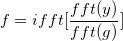

デコンボリューションは、コンボリューションのフーリエ変換は信号および応答のフーリエ変換の積に等しいというコンボリューション理論に基づいた高速アルゴリズムで実行されます。
y を分かっている応答、 g を応答とします。デコンボリューションは次のように計算されます。

ここで fft() および ifft() は、それぞれ高速フーリエ変換とその逆変換を表します。
fft(g)がいくつかのレスポンスに対して0に等しくなるので、上記の手順は数学的に正確な結果にはならない場合があります。このような場合、その情報を失い、元の信号を再構成できません。fft(g)が非常に小さい場合、除算をすると適切でない結果を導き出します。
サンプリング間隔で<自動>が選択されていると、計算で必要なサンプリング間隔はOriginが自動的に計算します。
自動的に計算されるサンプリング間隔は、時間データの増加の平均で、これは通常入力信号と結びついているXデータが使われます。結びついているX列が無ければ、行番号が使われます。Originが増加の平均を取得するのに失敗した場合、サンプリング間隔は1にセットされます。